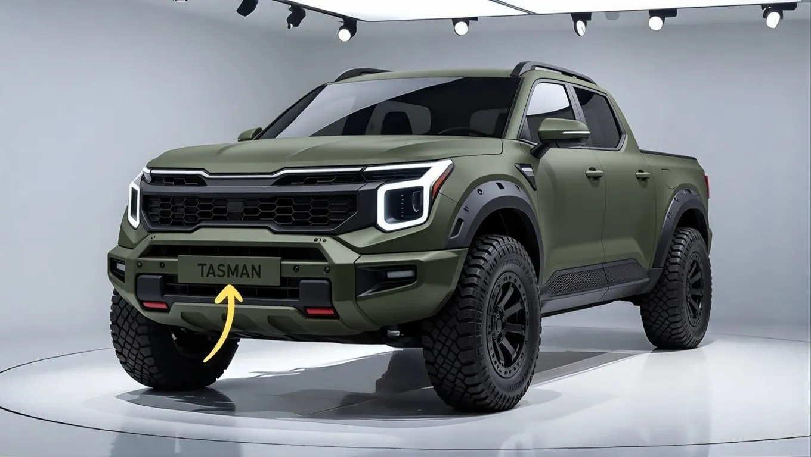

2026 Kia Tasman Debuts: Bold Modern Design & Ultimate Tech at an Unbeatable Price


As the automotive industry continues to evolve, one thing is clear: the future of driving is no longer just about getting from point A to point B, but about the experience itself. With the recent unveiling of the 2026 Kia Tasman, it's evident that this car is not just a mode of transportation, but a statement of innovation and style. The event, which drew in crowds of tech enthusiasts and car aficionados alike, showcased the Tasman's sleek design and impressive array of features.
The significance of the 2026 Kia Tasman's debut cannot be overstated, as it marks a new era in affordable luxury vehicles. With its bold modern design and emphasis on tech, the Tasman is poised to disrupt the market and challenge traditional notions of what a car should be. As consumers become increasingly savvy and demanding, the Tasman's unique blend of style, substance, and affordability is sure to resonate with a wide range of buyers.
Table of Contents
What Was Announced and Why It Matters
The 2026 Kia Tasman was officially unveiled, showcasing its bold modern design and an impressive array of tech features. The car's exterior is characterized by clean lines, a sloping roofline, and a distinctive front grille. Inside, the Tasman boasts a spacious and well-appointed cabin, complete with premium materials and a range of innovative features, including a large touchscreen display and advanced driver assistance systems.
One of the most significant aspects of the Tasman's announcement is its focus on accessibility. By offering a high-end vehicle at an affordable price point, Kia is democratizing access to luxury features and challenging the traditional hierarchy of the automotive market. This move is likely to have far-reaching implications for the industry as a whole, as other manufacturers may be forced to reevaluate their pricing strategies and feature offerings.
The Tasman's tech features are also noteworthy, with a range of options designed to enhance the driving experience and provide greater convenience and connectivity. From advanced safety features like lane departure warning and blind spot monitoring, to innovative infotainment systems and smartphone integration, the Tasman is designed to meet the needs of modern drivers.
The Key Numbers and What They Mean
While exact pricing and specifications for the 2026 Kia Tasman have not been officially announced, industry insiders and analysts are already weighing in on the car's potential impact. With its bold modern design and emphasis on tech, the Tasman is likely to appeal to a wide range of buyers, from tech-savvy millennials to families and commuters.
The numbers say that the Tasman is poised to be a game-changer in the automotive market. With its unique blend of style, substance, and affordability, the car is likely to attract a significant share of buyers who are looking for a high-end vehicle without the high-end price tag. As the market continues to evolve and consumers become increasingly demanding, the Tasman's focus on innovation and accessibility is sure to resonate.
- The 2026 Kia Tasman features a range of advanced safety features, including lane departure warning and blind spot monitoring.
- The car's infotainment system includes a large touchscreen display and support for smartphone integration.
- The Tasman's bold modern design is characterized by clean lines, a sloping roofline, and a distinctive front grille.
Also Read
More Tech stories →How This Affects Markets and Consumers
The 2026 Kia Tasman's debut is likely to have significant implications for the automotive market, as other manufacturers may be forced to reevaluate their pricing strategies and feature offerings. As consumers become increasingly savvy and demanding, the Tasman's unique blend of style, substance, and affordability is sure to resonate with a wide range of buyers.
The Tasman's impact on the market will also be felt by consumers, who will have access to a high-end vehicle at an affordable price point. This democratization of access to luxury features is likely to disrupt the traditional hierarchy of the automotive market, with far-reaching implications for the industry as a whole.
As the market continues to evolve and consumers become increasingly demanding, the Tasman's focus on innovation and accessibility is sure to resonate. With its bold modern design and emphasis on tech, the Tasman is poised to challenge traditional notions of what a car should be and provide a new standard for the industry.
Key Takeaways
- The 2026 Kia Tasman features a bold modern design and an impressive array of tech features.
- The car's focus on accessibility and affordability is likely to disrupt the traditional hierarchy of the automotive market.
- The Tasman's unique blend of style, substance, and affordability is sure to resonate with a wide range of buyers.
Frequently Asked Questions
What is the 2026 Kia Tasman's price point?
While exact pricing for the 2026 Kia Tasman has not been officially announced, the car is expected to be priced competitively with other vehicles in its class. The Tasman's focus on accessibility and affordability is likely to make it an attractive option for buyers who are looking for a high-end vehicle without the high-end price tag.
What tech features does the 2026 Kia Tasman offer?
The 2026 Kia Tasman features a range of advanced tech features, including a large touchscreen display, smartphone integration, and innovative safety features like lane departure warning and blind spot monitoring. The car's infotainment system is designed to provide greater convenience and connectivity, making it an ideal choice for modern drivers.
When will the 2026 Kia Tasman be available for purchase?
The 2026 Kia Tasman is expected to be available for purchase in the near future, although an exact release date has not been officially announced. Buyers who are interested in the Tasman can expect to hear more information about pricing, specifications, and availability in the coming months.
Conclusion
The 2026 Kia Tasman's debut marks a new era in affordable luxury vehicles, with a bold modern design and an impressive array of tech features. As the automotive industry continues to evolve, the Tasman's focus on innovation and accessibility is sure to resonate with a wide range of buyers. With its unique blend of style, substance, and affordability, the Tasman is poised to challenge traditional notions of what a car should be and provide a new standard for the industry.
As the market continues to shift and consumers become increasingly demanding, the 2026 Kia Tasman is an exciting development that is sure to have far-reaching implications. With its emphasis on tech, accessibility, and affordability, the Tasman is an ideal choice for modern drivers who are looking for a high-end vehicle without the high-end price tag. As the industry looks to the future, the 2026 Kia Tasman is a glimpse of what's to come – and it's an exciting prospect indeed.
Sarah Mitchell
Senior Tech Editor
Tech journalist with 8+ years of experience covering the latest in smartphones, EVs, AI, and consumer electronics. Bringing you accurate, well-researched stories from the world of technology.
Leave a Comment